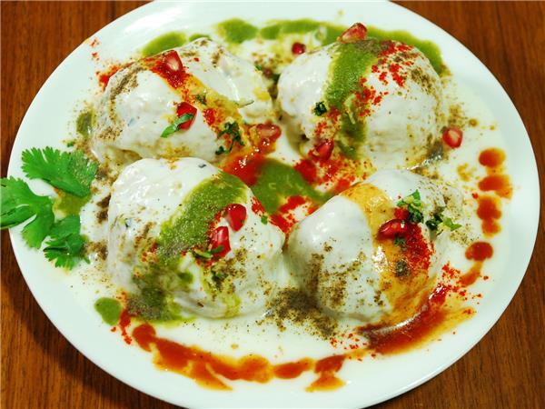

Dahi Bada, or Dahi Vada
as we call it, is extremely famous in Indore. The best place to taste most of the street food dishes is at Sarafa Bazaar. Try out the Dahi Bada at Joshi Dahi
Bada House, Sarafa. The badas here are prepared in style, with them sometimes being tossed in the air, much like a pizza base! The masala sprinkled
on it is out of this world and you must taste it to believe it.
Cost For Two: Rs 120 (approx.)